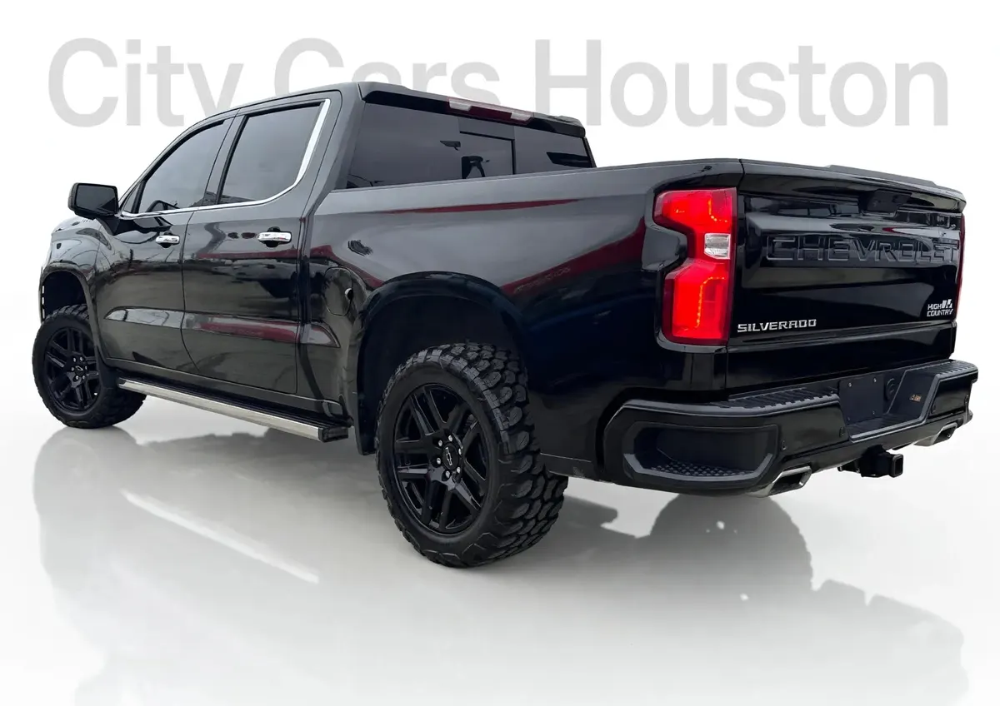

2021 Chevrolet Silverado
Gris • ID CCH-232

1/7Datos generales
| Año | 2021 |
|---|---|
| Marca | Chevrolet |
| Modelo | Silverado |
| Tipo | Troca |
| Color | Gris |
| Millas | 55,000 millas |
| Tracción | Por confirmar |
Especificaciones del modelo
| Motor | Más común: 5.3L EcoTec3 V8 (355 hp / 383 lb-pie). Opciones: 2.7L Turbo 4-cil (310 hp / 348 lb-pie); 4.3L V6 (285 hp / 305 lb-pie); 3.0L Duramax diésel 6-cil (277 hp / 460 lb-pie); 6.2L V8 (420 hp / 460 lb-pie) |
|---|---|
| Potencia | 355 (5.3L V8); 420 (6.2L V8); 310 (2.7L Turbo); 277 (3.0L Duramax); 285 (4.3L V6) |
| Torque | 383 lb-pie (5.3L V8); 460 lb-pie (6.2L V8 y 3.0L Duramax); 348 lb-pie (2.7L Turbo); 305 lb-pie (4.3L V6) |
| Transmisión | Automática de 6, 8 o 10 velocidades (varía según unidad) |
| Tracción del modelo | 4x2 (RWD) o 4x4 (varía según unidad) |
| Consumo (MPG) | Ciudad: 16 (5.3L V8); 23 (3.0L Duramax). Carretera: 22 (5.3L V8); 33 (3.0L Duramax) |
| Combustible | Gasolina (diésel opcional en algunas unidades) |
| Remolque máximo | 13,300 (6.2L V8 con paquete Max Trailering); 11,500 (5.3L V8) |
| Asientos | 6 |
| Carrocería | Pickup (camioneta cabina simple/doble) |
Datos típicos de este año y modelo, tomados de fuentes públicas (fabricante, KBB, Edmunds). El motor, la tracción y el equipamiento exactos de esta unidad los confirma el dealer.
Ideal para
Para quien necesita una troca para trabajo y para el día a día.
Año, millas y características salen de los datos del inventario; confirma los datos exactos de esta unidad con el dealer. Esta ficha no muestra precios: el dealer los da por escrito.